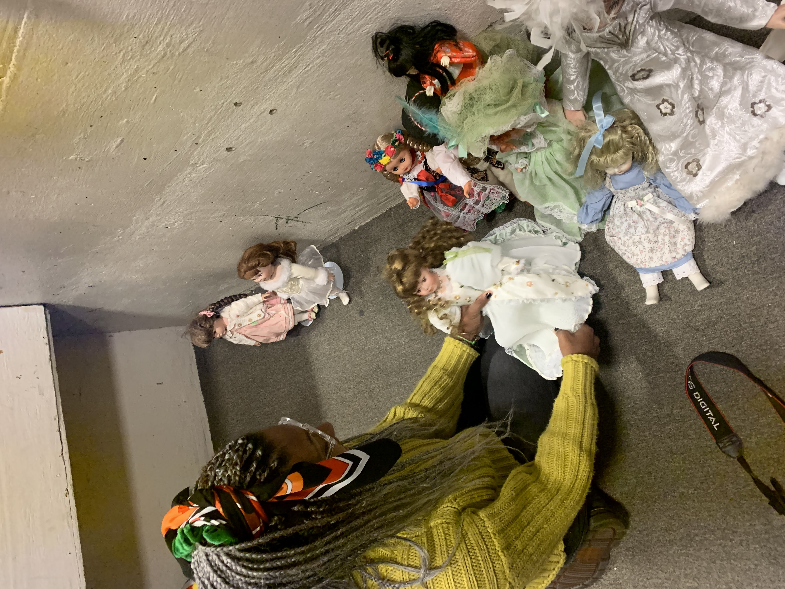
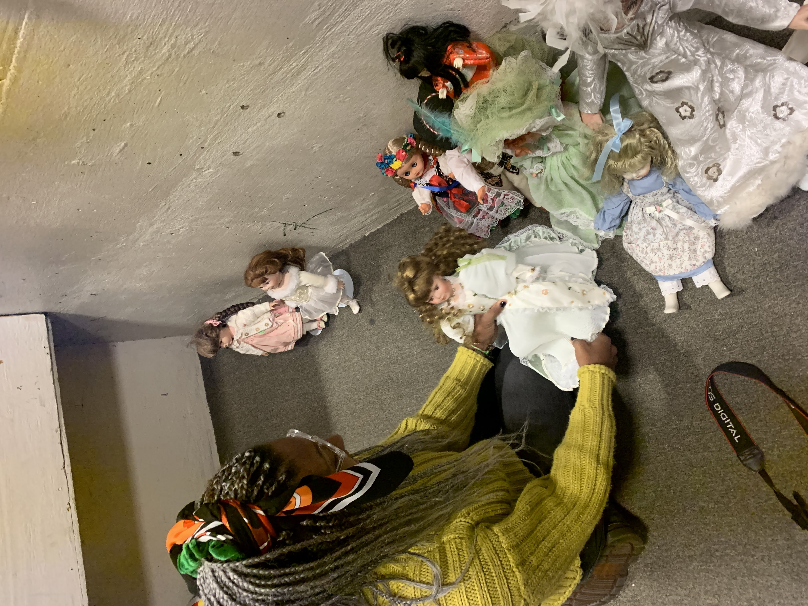

HOME
ROMANS
1 CORINTHIANS
2 CORINTHIANS
GALATIANS
EPHESIANS
PHILIPPIANS
COLOSSIANS
1 THESSALONIANS
2 THESSALONIANS
1 TIMOTHY
2 TIMOTHY
TITUS

2 THESSALONIANS
1
1
2 THESSALONIANS 1
W
R
O
N
G
1 Paul, Silas and Timothy,
To the church of the Thessalonians in God our Father and the Lord Jesus Christ:
2 Grace and peace to you from God the Father and the Lord Jesus Christ.
Thanksgiving and Prayer
3 We ought always to thank God for you, brothers and sisters, and rightly so, because your faith is growing more and more, and the love all of you have for one another is increasing. 4 Therefore, among God’s churches we boast about your perseverance and faith in all the persecutions and trials you are enduring.
5 All this is evidence that God’s judgment is right, and as a result you will be counted worthy of the kingdom of God, for which you are suffering. 6 God is just: He will pay back trouble to those who trouble you 7 and give relief to you who are troubled, and to us as well. This will happen when the Lord Jesus is revealed from heaven in blazing fire with his powerful angels. 8 He will punish those who do not know God and do not obey the gospel of our Lord Jesus. 9 They will be punished with everlasting destruction and shut out from the presence of the Lord and from the glory of his might 10 on the day he comes to be glorified in his holy people and to be marveled at among all those who have believed. This includes you, because you believed our testimony to you.
11 With this in mind, we constantly pray for you, that our God may make you worthy of his calling, and that by his power he may bring to fruition your every desire for goodness and your every deed prompted by faith. 12 We pray this so that the name of our Lord Jesus may be glorified in you, and you in him, according to the grace of our God and the Lord Jesus Christ.
2 THESSALONIANS 2
The Man of Lawlessness
2 Concerning the coming of our Lord Jesus Christ and our being gathered to him, we ask you, brothers and sisters, 2 not to become easily unsettled or alarmed by the teaching allegedly from us—whether by a prophecy or by word of mouth or by letter—asserting that the day of the Lord has already come. 3 Don’t let anyone deceive you in any way, for that day will not come until the rebellion occurs and the man of lawlessness is revealed, the man doomed to destruction. 4 He will oppose and will exalt himself over everything that is called God or is worshiped, so that he sets himself up in God’s temple, proclaiming himself to be God.
5 Don’t you remember that when I was with you I used to tell you these things? 6 And now you know what is holding him back, so that he may be revealed at the proper time. 7 For the secret power of lawlessness is already at work; but the one who now holds it back will continue to do so till he is taken out of the way. 8 And then the lawless one will be revealed, whom the Lord Jesus will overthrow with the breath of his mouth and destroy by the splendor of his coming. 9 The coming of the lawless one will be in accordance with how Satan works. He will use all sorts of displays of power through signs and wonders that serve the lie, 10 and all the ways that wickedness deceives those who are perishing. They perish because they refused to love the truth and so be saved. 11 For this reason God sends them a powerful delusion so that they will believe the lie 12 and so that all will be condemned who have not believed the truth but have delighted in wickedness.
Stand Firm
13 But we ought always to thank God for you, brothers and sisters loved by the Lord, because God chose you as firstfruits to be saved through the sanctifying work of the Spirit and through belief in the truth. 14 He called you to this through our gospel, that you might share in the glory of our Lord Jesus Christ.
15 So then, brothers and sisters, stand firm and hold fast to the teachings we passed on to you, whether by word of mouth or by letter.
16 May our Lord Jesus Christ himself and God our Father, who loved us and by his grace gave us eternal encouragement and good hope, 17 encourage your hearts and strengthen you in every good deed and word.
2 THESSALONIANS 3
Request for Prayer
3 As for other matters, brothers and sisters, pray for us that the message of the Lord may spread rapidly and be honored, just as it was with you. 2 And pray that we may be delivered from wicked and evil people, for not everyone has faith. 3 But the Lord is faithful, and he will strengthen you and protect you from the evil one. 4 We have confidence in the Lord that you are doing and will continue to do the things we command. 5 May the Lord direct your hearts into God’s love and Christ’s perseverance.
Warning Against Idleness
6 In the name of the Lord Jesus Christ, we command you, brothers and sisters, to keep away from every believer who is idle and disruptive and does not live according to the teaching you received from us. 7 For you yourselves know how you ought to follow our example. We were not idle when we were with you, 8 nor did we eat anyone’s food without paying for it. On the contrary, we worked night and day, laboring and toiling so that we would not be a burden to any of you. 9 We did this, not because we do not have the right to such help, but in order to offer ourselves as a model for you to imitate. 10 For even when we were with you, we gave you this rule: “The one who is unwilling to work shall not eat.”
11 We hear that some among you are idle and disruptive. They are not busy; they are busybodies. 12 Such people we command and urge in the Lord Jesus Christ to settle down and earn the food they eat. 13 And as for you, brothers and sisters, never tire of doing what is good.
14 Take special note of anyone who does not obey our instruction in this letter. Do not associate with them, in order that they may feel ashamed. 15 Yet do not regard them as an enemy, but warn them as you would a fellow believer.
Final Greetings
16 Now may the Lord of peace himself give you peace at all times and in every way. The Lord be with all of you.
17 I, Paul, write this greeting in my own hand, which is the distinguishing mark in all my letters. This is how I write.
18 The grace of our Lord Jesus Christ be with you all.
https://www.christiantoday.com/article/christians-stay-positive-on-their-faith-despite-feeling-misunderstood-and-persecuted-by-society-study-says/82300.htm

No one likes to admit that they are wrong and when an entire group or organization messes up the effects can be devastating. The church of Thessalonica had misunderstood Paul's previous words and started to stray away from the righteous work they were doing. By sending a second letter to correct this false beliefs Paul had hoped to set the church on the right path, how often do we do the same in our own life? We don't understand what someone is fully doing and create false accusations, we should dive deeper into the problem and come out with better judgment.
 
